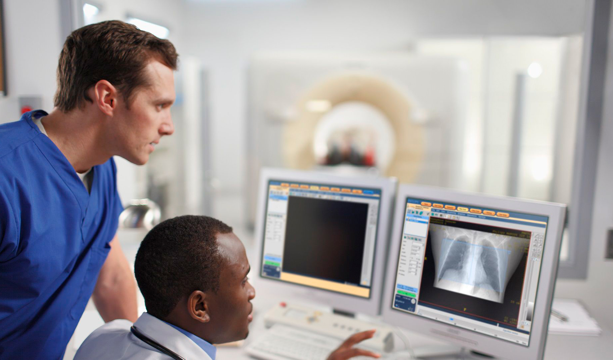

Las TIC benefician la Salud
Las TIC se han hecho presentes en el ámbito de la salud. La práctica clínica gira alrededor de datos, información y conocimiento. Internet es la mayor fuente de información sanitaria no solo para los profesionales sino también para los pacientes. Además, han surgido y siguen surgiendo multitud de iniciativas de aplicaciones médicas y sanitarias que, aparte de los servicios de información, contemplan la posibilidad de consulta a médicos: la segunda opinión, los grupos de apoyo entre pacientes, servicios de telemedicina y una amplia gama de posibilidades. El desarrollo de infraestructuras de redes digitales de comunicaciones de tipo corporativo y el acceso generalizado a internet están permitiendo el flujo de información entre todos los actores, usando historiales clínicos electrónicos en un entorno seguro, mejorando la calidad de los servicios y facilitando una gestión más eficiente y cómoda para los ciudadanos.
La tendencia actual del mercado tecnosanitario pasa por aunar los conceptos de innovación, efectividad y sostenibilidad. Un informe sobre la Tecnología Sanitaria en España elaborado por el ICEX e Investin Spain, refleja un Sistema Sanitario inmerso en un “proceso de evolución hacia un sistema más moderno, eficiente, flexible y efectivo, que pasa por la aplicación de las TIC en el ámbito de la Salud, la incorporación de biomateriales y la aplicación de nuevos avances biotecnológicos”.
A falta aún de datos de 2017, el informe refleja que en 2016 el mercado de la tecnología sanitaria en España facturó 7.200 millones de euros, acercándose de nuevo a las cifras registradas en 2012, antes de verse afectado por la recesión económica. Un dato que ejemplifica la recuperación y el buen hacer de un sector boyante dentro de la industria española, con una fuerte proyección internacional
¡Gastar en tecnología sanitaria es ahorrar costes! Cuanto más eficiente resulte la atención sanitaria, mayor es el ahorro futuro en rehospitalizaciones, alargamiento de los tratamientos, complicaciones derivadas y pérdidas de productividad. Dichas tecnologías no representan únicamente el material hospitalario.
Uno de los principales retos es la interacción entre los distintos agentes implicados, especialmente entre los dos extremos de la cadena: los pacientes y la industria. La incorporación de los pacientes se postula cada vez más como un elemento clave a la hora de evaluar la experiencia de uso de las tecnologías sanitarias.
Medicina Personalizada
Según el estudio ‘Future Health Index España2017’, elaborado por Philips con el aval del MIT Technology Review, la tecnología sanitaria está dando un giro hacia la focalización en la gestión de datos, con elementos como el big data o la medicina personalizada de precisión. Los diagnósticos personalizados, la prevención activa, el autocuidado, la interconectividad e interoperabilidad de las historias clínicas y de la receta electrónica y la asistencia remota representan el camino a seguir.
La cuestión está en pasar de la mera recolección de datos (de la ingente cantidad que se generan en este ámbito) a una gestión del conocimiento a través de éstos. Este cambio de paradigma haría posible la introducción plena de la medicina personalizada, que permite adaptar el tratamiento a las características individuales de cada paciente y conseguir un mejor pronóstico.